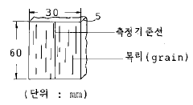
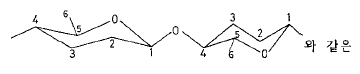
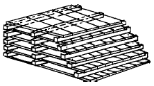
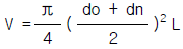
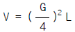
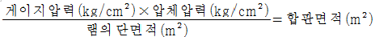
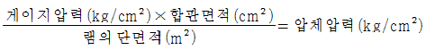
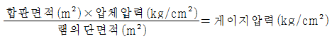
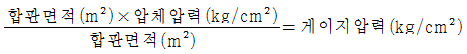

임산가공산업기사 (2002-08-11 기출문제)
1과목: 목재이학
1. 휨강도가 가장 큰 수종은 어느 것인가?
- 참나무
- 자작나무
- 오동나무
- 소나무
(정답률: 알수없음)

2. 목재의 전기저항에 대한 설명 중 틀린 것은 어느 것인가?
- 잘 건조된 목재는 절연체가 된다.
- 목재함수율(30%이내)이 높아지면 전기저항은 급격히 저하한다.
- 온도가 상승함에 따라 전기 저항이 증가한다.
- 목재 비중이 작을수록 저항이 크다.
(정답률: 알수없음)
3. 목재의 수축율이 가장 큰 방향은 어느 방향인가?
- 반경방향(방사방향)
- 접선방향(촉단방향)
- 섬유방향
- 방사방향과 섬유방향
(정답률: 알수없음)
4. 긴 목재를 양쪽에서 받치고 가운데에 외력을 가하면 굽게 된다. 이때 목재는 굽지 않으려는 응력이 생기는데 이 응력을 무엇이라 하는가?
- 곡강도(曲强度)
- 신장강도(伸長强度)
- 전단강도(剪斷强度)
- 압축강도(壓縮强度)
(정답률: 알수없음)
5. 목재의 강도와 비중과의 관계를 나타낸 것 중 일반적인 것은?
- 곡선
- 단교차선
- 포물선
- 쌍곡선
(정답률: 알수없음)
6. 일반적으로 목재의 경도는 어느 단면에서 가장 큰가?
- 목구면
- 정목면
- 판목면
- 추정면
(정답률: 알수없음)
7. 피브릴(fibril)의 주향이 수축(樹軸)과 이루는 각도가 커지면 수축방향의 수축과 팽창의 변화는?
- 각도가 클수록 커진다.
- 각도가 클수록 작아진다.
- 관계없다.
- 수종에 따라 다르다.
(정답률: 알수없음)
8. 다음 그림은 목재의 무슨 방향의 수축율을 측정하기 위해 만든 시편인가?

- 섬유방향
- 접선방향
- 반경방향
- 방사방향
(정답률: 알수없음)
9. 목재의 평형함수율에 영향하지 않는 인자는?
- 추출물
- 온도
- 관계습도
- 비열
(정답률: 알수없음)
10. 히스트리시스(hystresis)에 대한 설명에서 틀린 것은?
- 복잡한 모세관 구조를 가진 물질에서 나타난다.
- 탈착곡선(脫着曲線)은 흡착곡선(吸着曲線)보다 위에 위치한다.
- 흡착곡선은 탈착곡선보다 위에 위치한다.
- 목재의 흡착 - 탈착함수율 비율은 보통 0.8 정도이다.
(정답률: 알수없음)
11. 3cm × 3cm × 2cm 크기의 생재중량이 50g 전건중량이 25g일때 이 목편의 전건중량에 의한 함수율은?
- 50 %
- 100 %
- 150 %
- 200 %
(정답률: 알수없음)
12. 섬유방향에서의 수분의 확산 속도는 직각방향의 몇 배인가?
- 1 - 5 배
- 10 - 15 배
- 20 - 25 배
- 30 - 35 배
(정답률: 알수없음)
13. 기건상태에서 무게가 40g인 목재의 부피를 측정하였더니 80cm3였다. 이 목재의 기건비중은 얼마인가?
- 0.35
- 0.40
- 0.45
- 0.50
(정답률: 알수없음)
14. 다음은 목재의 비중을 설명한 것이다. 잘못된 것은?
- 목재의 비중은 수종,산지,생육상태,부위에 따라 다르다.
- 비중은 목재의 강도와 상관 관계를 가진다.
- 비중의 크기와 추재율과는 상관 관계를 갖지 않는다.
- 목재질(木材質)만의 무게를 진비중이라고 한다.
(정답률: 알수없음)
15. 전건비중 ro= 0.5 인 목재가 있다. 함수율 10% 인 때의 이 목재의 비중은 얼마나 되는가?
- 0.53
- 0.55
- 0.57
- 0.58
(정답률: 알수없음)
16. 다음 중 섬유포화점에서의 목재함수율을 바르게 나타낸것은?
- 10 %
- 12 - 18 %
- 25 - 35 %
- 40 %
(정답률: 알수없음)
17. 전건법에 의한 목재 함수율 측정시 건조온도는?
- 90 - 95℃
- 100 - 1⑤℃
- 106 - 110℃
- 110 - 120℃
(정답률: 알수없음)
18. 단면적이 9cm2인 전단시험체의 전단강도가 80kg/cm2이라면 이 시험체에 가해진 최대하중은?
- 640 Kg
- 720 Kg
- 896 Kg
- 982 Kg
(정답률: 알수없음)
19. 섬유포화점의 목재의 비저항은?
- 103 ohm-cm
- 106 ohm-cm
- 109 ohm-cm
- 1012 ohm-cm
(정답률: 알수없음)
20. 온도 20℃에서 건조 목재의 평균 비열은?
- 0.289 cal/g℃
- 0.389 cal/g℃
- 0.489 cal/g℃
- 0.589 cal/g℃
(정답률: 알수없음)
2과목: 목재화학
21. 온대산 침엽수의 리그닌 함량은?
- 10%
- 20%
- 30%
- 40%
(정답률: 알수없음)
22. lignin 을 2N - NaOH 를 촉매로 nitro - benzene 하에 170-180℃ 에서 처리하여 얻을수 있는 물질은 무엇 인가?
- furfural
- alcohol류
- viscose
- vanilline
(정답률: 알수없음)
23. 목재부후(木材腐朽)정도로 알수 있는 방법은?
- Ether 추출물의 양
- 1% NaOH 추출물의 양
- Alcohl:Benzone 추출물의 양
- 온수 추출물의 양
(정답률: 알수없음)
24. 다음 Cellobiose 의 결합 형태는 어느 것에 속하는가?

- 의자형(Chair Form)
- 배형(Boat Form)
- 산형(Mountin Form)
- 가위형(Scissor Form)
(정답률: 알수없음)
25. 셀룰로오스는 피란의 환상구조를 갖는 ( ) 의 제1번 탄소원자와 ( ) 의 제4번 탄소와 에스테르상 결합된 쇄상의 탄수화물이다. ( )에 들어갈 내용으로서 맞는 것은?
- α -D-glucose
- β -D-glucose
- γ -D-glucose
- δ -D-glucose
(정답률: 알수없음)
26. 아염소산나트륨, 빙초산을 3-4회 가하면서 측정하는 방법은 어느 성분을 분석하는 것인가?
- 알칼리추출물
- 펜토산
- 리그닌
- 전섬유소
(정답률: 알수없음)
27. 수피,잎,목재,종실에 존재하는 수용성 폴리페놀류이며, 이 수용액은 떫은 맛이 있고, 철과 반응하면 암청색 혹은 암록색으로 정색된다. 이 물질은?
- 타닌
- 터어페노이드
- 플라바노이드
- 리그난
(정답률: 알수없음)
28. 리그닌의 구조간 결합 중 가장 중요하며 양적 비율이 높은 결합형은 무엇인가?
- β - 5 형
- β -β 형
- β -O-4 형
- α -O-4 형
(정답률: 알수없음)
29. 잎갈나무(Larix)에서 특이하게 다량 추출되는 헤미셀룰로 오스는 어느 것인가?
- 글루크로노자일란(glucuronoxylan)
- 글루코만난(glucomannan)
- 아라비노갈락탄(arabinogalactan)
- 글루칸(glucan)
(정답률: 알수없음)
30. 셀룰로오스의 조성은 어떤 원소로 이루어져 있는가?
- 탄소, 수소, 질소
- 탄소, 산소, 수소
- 질소, 인산, 수소
- 탄소, 수소, 나트륨
(정답률: 알수없음)
31. 소나무재 Resin 의 Resin Acid 함량은?
- 50-60%
- 60-70%
- 70-80%
- 80-90%
(정답률: 알수없음)
32. 열(熱)에 대한 저항성이 가장 약한 물질은 어느것 인가?
- Cellulose
- Hemicellulose
- Lignin
- 목재
(정답률: 알수없음)
33. 리그닌을 구성하는 기본적 구조는?
- 페놀
- 수산기
- 페닐프로판
- 메톡실기
(정답률: 알수없음)
34. 아세틸 셀룰로오즈의 치환도(D.S) 2.5란?
- glucose 잔기의 수산기 중 평균 2.5개가 아세틸기와 결합되어 있다.
- glucose 잔기의 C - H 결합의 -H 대신 평균 2.5개의 아세틸기가 결합되어 있다.
- 아세틸기와 셀룰로오즈의 구성비가 1 : 2.5 이다.
- 아세틸기와 셀룰로오즈의 구성비가 2.5 : 1 이다.
(정답률: 알수없음)
35. 다음 셀룰로오즈 섬유의 구조에 대한 설명 중 틀린 것은?
- 결정영역과 비결정영역으로 되어 있다.
- 프로토피브릴은 최대 피브릴을 뜻한다.
- 마이크로피브릴의 폭은 100-300Å이다
- 엘레멘타리피브릴의 폭은 35Å이다
(정답률: 알수없음)
36. 헤미 셀룰로오스의 성분으로 옳지 않은 것은?
- 리그닌
- 자일란
- 글루코 만난
- 갈락토 글루코 만난
(정답률: 알수없음)
37. 산 가수분해법(클라손 리그닌정량법)으로 리그닌을 정량할 경우 먼저 탈지한 시료를 몇 % 의 황산에 가수분해 하는가?
- 62%
- 72%
- 82%
- 92%
(정답률: 알수없음)
38. 침엽수 및 활엽수재의 이상재(Reaction Wood)에서만 단리 (單리)되는 성분은?
- Araban
- Xylan
- Galactan
- Mannan
(정답률: 알수없음)
39. 목재의 성분 중 활엽수와 비교하여 침엽수에만 있는 구성 성분은 어느 것인가?
- 유세포
- 도관
- 가도관
- 목섬유
(정답률: 알수없음)
40. 황산,염산 등에 Cellulose 는 용해 되는데 Cellulose 의 용재는 어느 것인가?
- Cellulose가 산으로서 작용한다.
- Cellulose가 염기로서 작용한다.
- Cellulose와 착체를 형성한다.
- Cellulose와 유도체를 형성한다.
(정답률: 알수없음)
3과목: 펄프제지학
41. 종이의 백색도, 불투명도, 광택도, 평활성 등을 높이기 위해 첨가되는 충전물이 아닌 것은?
- 백토
- 활석
- 황토
- 탄산칼슘
(정답률: 알수없음)
42. 로진 사이징을 행할때 정착지료 알람을 건조펄프 톤당 10kg 을 사용하였다며 몇 % 첨가 한 것인가?
- 6%
- 5%
- 3%
- 1%
(정답률: 알수없음)
43. 다음 중 크라프트법의 약품 조성은 어느 것인가?
- NaOH
- NaOH + Na2S
- NaOH + Na2SO3
- Na2CO3 + Na2SO3
(정답률: 알수없음)
44. 2차(二次)섬유의 재펄프화 장치는 다음과 같이 3 가지로 분류될 수 있다. 다음 중 바른 것은?
- 분산기,해섬기,래커(ragger)
- 분산기,해섬기,디플레이커(deflaker)
- 해섬기,디플레이커,래거(ragger)
- 분산기,디플레이커,래거(ragger)
(정답률: 알수없음)
45. 종이의 인열강도는 인열강도지수로 나타낸다. 인열강도지수(mN. m2/g) = [5장의 인열강도측정치/평량 (g/m2)]×320×0.0981이다. 이때 5장의 인열강도측정치가 20이고, 평량이 65g/m2이면 인열강도지수는?
- 6.66mN. m2/g
- 7.66mN. m2/g
- 8.66mN. m2/g
- 9.66mN. m2/g
(정답률: 알수없음)
46. 크라프트 증해에 사용되는 약품이 회수 공정을 거쳐 순환되고 있는데 이 순환계에서 손실되는 약품은?
- CaO, CaSO4
- H2SO3, MgCO3
- Na2CO3, S
- Mg(OH)2, Mg(HSO3)2
(정답률: 알수없음)
47. 양호한(적절한)칩(chip)의 두께는 몇 mm 정도인가?
- 2mm이하
- 2∼5mm
- 4∼7m
- 7mm이상
(정답률: 알수없음)
48. 중성 아황산 반화학펄프(NSSC)의 증해액 조성을 올바르게 나타낸 것은?
- Na2SO3 + NaHCO3
- Na2CO3 + NaHCO3
- Na2SO3 + NaOH
- Na2CO3 + NaOH
(정답률: 알수없음)
49. 아황산 펄프(SP)제조법의 증해액 중 유리산(유리SO2)은 다음 중 어느것 인가?
- H2SO3 및 Ca(HSO3)2 중 의 SO2
- H2SO3 와 CaSO3 중 의 SO2
- H2SO3 과 Ca(HSO3)2 중 의 SO2 의 1/2
- 결합 SO2 에서 전(총) SO2를 뺀것
(정답률: 알수없음)
50. 비중 0.45 인 소나무 원목 1m3를 크라프트 펄프화 하여 절건중량을 측정 하였더니 180kg 이었다. 이 펄프의 수율은 얼마인가?
- 30%
- 40%
- 50%
- 60%
(정답률: 알수없음)
51. 쇄목기나 리파이너(Refiner)와 같은 기계로 섬유를 해리시켜 만드는 펄프는?
- 기계펄프
- 화학펄프
- 반화학펄프
- 용해펄프
(정답률: 알수없음)
52. 정제가 된 용해용 펄프를 17.5% NaOH 용액에 침적한후 분쇄하여 이황화탄소를 첨가하고 상온에서 처리하여 묽은 NaOH 용액에 용해시켜 만드는 것은?
- 비스코우스
- 플로링
- 알파셀룰로오스
- 프로필 알코올
(정답률: 알수없음)
53. 하이드로 트로피(Hydrotropy)펄프화법의 특징을 가장 잘 설명한 것은?
- 용액을 희석하면 리그닌을 침전 제거할수 있다.
- 용액을 농축시키면 리그닌을 침전 제거할수 있다.
- 펄프 수율 및 품질이 좋지만 단리 리그닌의 변질이 많다.
- 약품가격이 kp법 보다 고가이다.
(정답률: 알수없음)
54. 아황산 펄프화 ( sulfite pulping ) 의 반응속도에 영향을 미치는 인자가 아닌 것은?
- Na2S농도
- pH
- SO2농도
- 온도
(정답률: 알수없음)
55. 다음 중 일반적인 화학 펄프제조법이 아닌 것은?
- 아황산법
- 소다법
- 황산염법
- 염산염법
(정답률: 알수없음)
56. UKP 란 어떤 펄프인가?
- 미표백 아황산펄프
- 표백 아황산펄프
- 미표백 크라프트펄프
- 표백 크라프트펄프
(정답률: 알수없음)
57. 고해시 발생하는 현상이 아닌 것은?
- 1차벽 제거
- 섬유의 절단
- 섬유 유연성 증가
- 섬유의 용해
(정답률: 알수없음)
58. 다음 중 도공지의 기본 구성 요소가 아닌 것은?
- 안료(pigment)
- 염료(dye)
- 원지(base paper)
- 바인더(binder)
(정답률: 알수없음)
59. 펄프 표백에 사용된 물질은?
- 뇨소
- 염소
- 수지
- 벤젠
(정답률: 알수없음)
60. 펄프의 고해정도를 판정의 기준으로 측정하는 것은?
- 여수도(Freeness)
- 인열강도(Tear Strength)
- 건조강도(dry Strength)
- 파열강도(Burst Strength)
(정답률: 알수없음)
4과목: 임산제조학
61. 목탄을 구성하고 있는 주요 구성요소중 하나인 고정탄소의 비율은?
- 0.45 ~ 3.69 %
- 14.83 ~ 37.82 %
- 54.43 ~ 81.20 %
- 0 ~ 0.44 %
(정답률: 알수없음)
62. 수탄율(收炭率)이 가장 높은 제탄법은?
- 무개제탄법(無蓋製炭法)
- 갱내제탄법(坑內製炭法)
- 퇴적제탄법(堆積製炭法)
- 축요제탄법(築窯製炭法)
(정답률: 알수없음)
63. 천연 건조시 그림과 같은 나무쌓기(棧木)를 무엇이라고 하는가?

- 삼각적(Crib Pile)
- 경사적(Pitched Pile)
- 계단적(Stepped Stacking)
- 교호적(Staggered Stacking)
(정답률: 알수없음)
64. 다음 중 정목제재법(柾目製材法)을 잘 말한 것은?
- 촉단면 제재법(觸斷面 製材法)이라고도 하며, 원목(原木)의 연륜과 접선이 되고 수선(髓線)에 직각이 되도록 제재한 것이다.
- 목재가 부족한 나라에서 일반적으로 많이 실시하며 제재제품이 질(質)보다도 양적(兩的)인 생산을 목적으로 하는 방법이다.
- 목재가 풍부한 나라에서 일반적으로 많이 실시하며, 대개 수선에 평행하고 연륜에 직각이 되도록 제재한 것으로 제재된 제품은 강도나 목재의 물리적 성질이 우수하다.
- 이 방법으로 제재한 목재는 건조시킬 때 뒤틀리고 터지는 결함이 일어나기 쉬워서 균일한 가공을 할수 없는 반면 생산비가 적게 든다.
(정답률: 알수없음)
65. 소폭 단판의 연결끝을 서로 이어 소정의 광폭단판이 되게 하는 것을 무엇이라 하는가?
- 종접합
- 스카아프(scarf)
- 스플라이서(splicer)
- 스프리더(spreader)
(정답률: 알수없음)
66. 흑탄에 비해 용적중이 크고 백탄과 비슷하여 지속성이 길기 때문에 난방용으로 적합하며, 공업용으로는 이황화탄소의 원료로 사용되는 것은?
- 성형목탄(成型木炭)
- 성형신재탄(成型薪材炭)
- 활성탄(活性炭)
- 파쇄탄(破碎炭)
(정답률: 알수없음)
67. 수용성 방부제의 수분속에 있는 확산현상을 이용하여 고함수율재의 내부 깊숙히 방부제를 침투시키는 방법은?
- 확산법
- 가압법
- 침투촉진법
- 온냉욕법
(정답률: 알수없음)
68. 천연 건조장 선정시 입지 조건이 아닌 것은?
- 재목을 쌓을 수 있는 충분한 부지가 있는 곳
- 평지 또는 완경사지 일 것
- 온· 습도의 기록장치가 있는 곳
- 배수가 잘 되는 곳
(정답률: 알수없음)
69. 목재는 치수안정성이 불량한 재료의 하나이다. 목재의 치수안정성을 개선하기 위하여 다양한 처리방법이 이용되고 있는데 다음 중 목재의 치수안정화 처리방법이 아닌 것은?
- 증기처리
- 피복처리
- 비닐수지처리
- 직교적층
(정답률: 알수없음)
70. 다음 중 목재 당화법에 속하지 않는 것은?
- 로우리(Lowry) 법
- 쇼울러(Scholler) 법
- 매디슨(Madison) 법
- 라이노우(Rheinau) 법
(정답률: 알수없음)
71. 약제를 가압주입 하기전에 실린더안의 공기를 진공으로 하여 처리하는 방법은 다음 중 어느 것인가?
- 베델법(Bethel process)
- 뤼핑법(Ruping process)
- 로우리법(Lowry process)
- 부체리법(Boucherie process)
(정답률: 알수없음)
72. 내마모성(耐磨耗性)을 개량할 목적으로 합판, 파아티클보오드 등의 기재(基材) 표면에 각종 플라스틱시이트, 수지함침지, 베니어판 등을 적층시킨 마루판 재료는?
- 적층합판
- 방화적층합판
- FRP적층합판
- 샌드위치복합체
(정답률: 알수없음)
73. 녹나무에서 장뇌를 얻을 때의 일반적인 채취법은?
- 수증기증류법
- 압착법
- 추출법
- 흡수법
(정답률: 알수없음)
74. 목재 건조중에 건조결함이 최소인 조건하에서 가능한한 빨리 건조할 수 있도록 온도와 상대습도를 정해주는 일종의 건조 공정표를 말하는 것은?
- 건조 스케쥴(drying schedule)
- 건조 응력(drying stress)
- 건조 속도(drying rate)
- 건조 곡선(drying curve)
(정답률: 알수없음)
75. 다음 중 외장용 중밀도섬유판(MDF)의 제조에 사용해서는 안될 접착제는 어느 것인가?
- 페놀 수지(phenol formaldehyde resin) 접착제
- 멜라민 수지(melamine formaldehyde resin) 접착제
- 아이소시아네이트 수지(isocyanate resin) 접착제
- 요소 수지(urea formaldehyde resin) 접착제
(정답률: 알수없음)
76. 원목재적 계산방식중 Brereton 공식은? (d=직경, do=원구직경, dn=말구직경, v=재적, L=길이, G=중앙직경)
- V = dn2L


- V = 1인치 × 1인치 × 1휘트
(정답률: 알수없음)
77. 목재 당화에서 일어나는 주요 화학반응은?
- 산화분해
- 가수분해
- 수소분해
- 열분해
(정답률: 알수없음)
78. 집성재의 제조에 있어서 핑거조인트(finger joint)는 원목이용율이 높고 강도도 우수하여 많이 적용되고 있다. 핑거제조시 단일 핑거의 폭(t)에 대한 핑거의 길이(l)의 비는 다음 중 어느 것이 적절한가?
- t / l = 1 : 2.0 ~ 3.0
- t / l = 1 : 3.0 ~ 4.0
- t / l = 1 : 4.0 ~ 5.0
- t / l = 1 : 5.0 ~ 6.0
(정답률: 알수없음)
79. 다음은 합판제조시 유압식프레스의 가압면적과 게이지압력 및 압체압력과의 관계를 나타낸 것이다. 관계식을 올바르게 나타낸 것은?




(정답률: 알수없음)
80. 보통합판의 품질기준 중 접착성은 내수, 준내수 및 비내 수 접착력으로 구분할 수 있다. 각 시험에서 인장전단 접착력은 얼마 이상이어야 하는가?
- 5.0 kgf/cm2
- 7.0 kgf/cm2
- 9.0 kgf/cm2
- 10.0 kgf/cm2
(정답률: 알수없음)